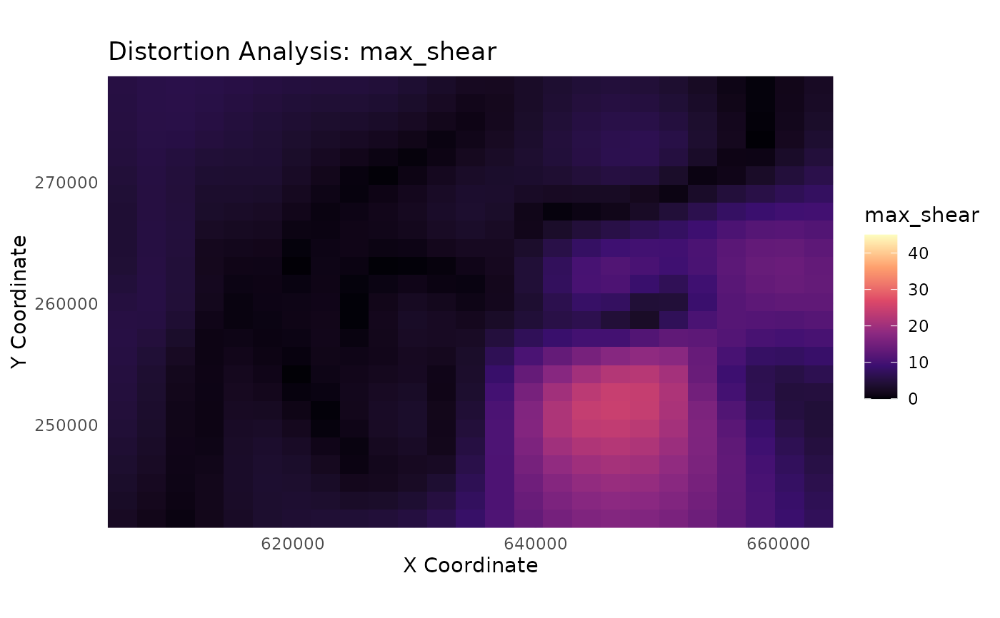
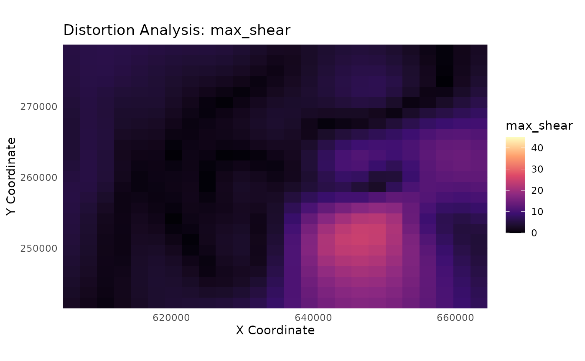

Creates a visualization of a continuous distortion metric from
the output of analyze_distortion().
Usage
plot_distortion_surface(
distortion_sf,
metric,
gcp_data = NULL,
palette = "viridis",
diverging = FALSE
)Arguments
- distortion_sf
An
sfobject of points returned byanalyze_distortion().- metric
A character string specifying the name of the metric column to plot. Must be one of "a", "b", "area_scale", "log2_area_scale", "max_shear", "max_angular_distortion", "airy_kavrayskiy", or "theta_a".
- gcp_data
An optional
sfobject of the original GCPs to overlay on the plot for context.- palette
A character string specifying the name of a viridis color palette (e.g., "viridis", "magma", "cividis"), used when
diverging=FALSE.- diverging
A logical value. If
TRUE, a diverging color scale is used, which is ideal for metrics likearea_scaleorlog2_area_scale.
Details
This function visualizes the distortion field as it exists on the source map's coordinate space. This allows for a direct visual correlation between features on the original map and the calculated distortion metrics.
For points on a regular grid (recommended): It creates a rasterized surface plot using
geom_raster(), which is ideal for visualizing continuous distortion surfaces. To create a regular grid, use the pattern:sf::st_make_grid(...) %>% sf::st_centroid() %>% sf::st_sf().For scattered, irregular points (like the original GCPs): It creates a point plot where each point is colored by its metric value. This avoids memory errors and still provides a useful diagnostic plot, along with a message recommending the use of a grid for a true surface plot.
Interpreting Plots by Model Type
The visual output will depend on the model used to generate the
distortion_sf data:
gamortpsmodel data: Will produce a smooth, continuous surface withcspatially varying colors, which is highly informative. This is the idealcmodel for this function.helmertorlmmodel data: Will produce a plot with a single, uniform color, as the underlying distortion metrics are constant across the map.rfmodel data: Will produce a plot indicating an Identity transformation (area_scale= 1,max_shear= 0). While RF might be an excellent correction tool, this analysis is not informative for it.
You may see a benign warning from ggplot2 about "uneven horizontal
intervals." This is caused by minor floating-point inaccuracies in the grid
coordinates and can be safely ignored; the plot is still accurate.
Examples
# --- 1. Train a GAM model for the best visual results ---
library(magrittr)
data(swiss_cps)
gam_model <- train_pai_model(swiss_cps, pai_method = "gam")
#> Training 'gam' model...
# --- 2. Create a regular grid of POINTS for analysis ---
analysis_points <- sf::st_make_grid(swiss_cps, n = c(25, 25)) %>%
sf::st_centroid() %>%
sf::st_sf()
distortion_on_grid <- analyze_distortion(gam_model, analysis_points)
#> Calculating distortion metrics for gam model...
#> Finalizing metrics from derivatives...
#> Distortion analysis complete.
# --- 3. Plot a metric using a standard sequential scale ---
plot_distortion_surface(
distortion_on_grid,
metric = "max_shear",
palette = "magma"
)
#> Regular grid detected. Creating a surface plot with geom_raster().
#> Warning: Raster pixels are placed at uneven horizontal intervals and will be shifted
#> ℹ Consider using `geom_tile()` instead.
#> Warning: Raster pixels are placed at uneven horizontal intervals and will be shifted
#> ℹ Consider using `geom_tile()` instead.
 # --- 4. Plot a metric using a diverging scale ---
# 'log2_area_scale' is ideal for this, as it's centered at 0.
plot_distortion_surface(
distortion_on_grid,
metric = "log2_area_scale",
diverging = TRUE
)
#> Regular grid detected. Creating a surface plot with geom_raster().
#> Warning: Raster pixels are placed at uneven horizontal intervals and will be shifted
#> ℹ Consider using `geom_tile()` instead.
#> Warning: Raster pixels are placed at uneven horizontal intervals and will be shifted
#> ℹ Consider using `geom_tile()` instead.

# --- 4. Plot a metric using a diverging scale ---
# 'log2_area_scale' is ideal for this, as it's centered at 0.
plot_distortion_surface(
distortion_on_grid,
metric = "log2_area_scale",
diverging = TRUE
)
#> Regular grid detected. Creating a surface plot with geom_raster().
#> Warning: Raster pixels are placed at uneven horizontal intervals and will be shifted
#> ℹ Consider using `geom_tile()` instead.
#> Warning: Raster pixels are placed at uneven horizontal intervals and will be shifted
#> ℹ Consider using `geom_tile()` instead.
